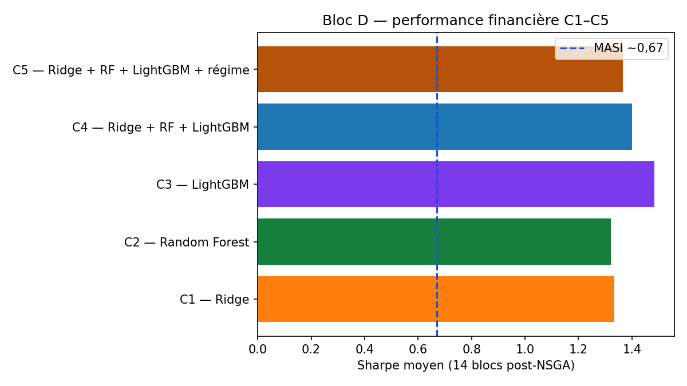
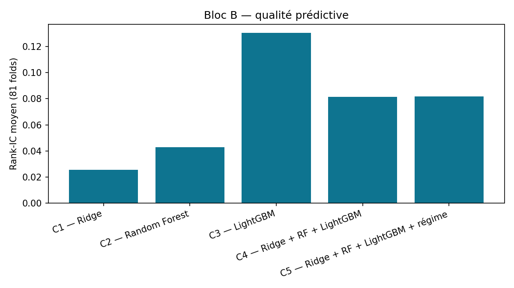
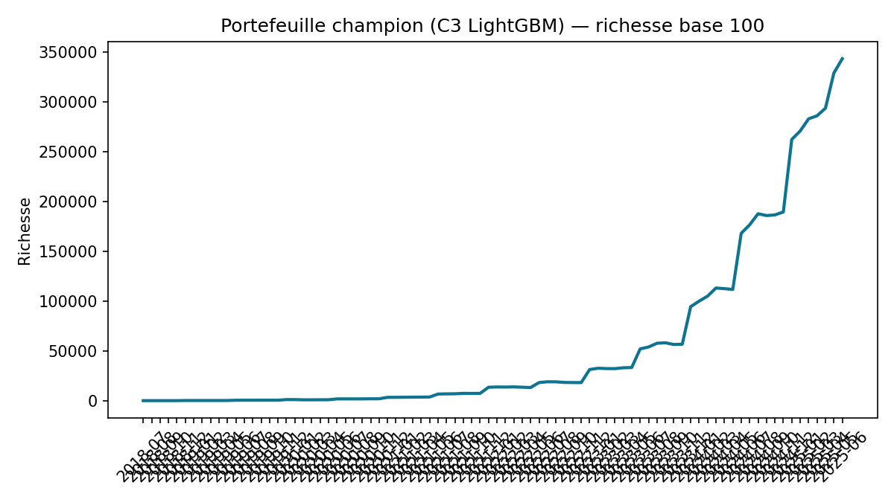
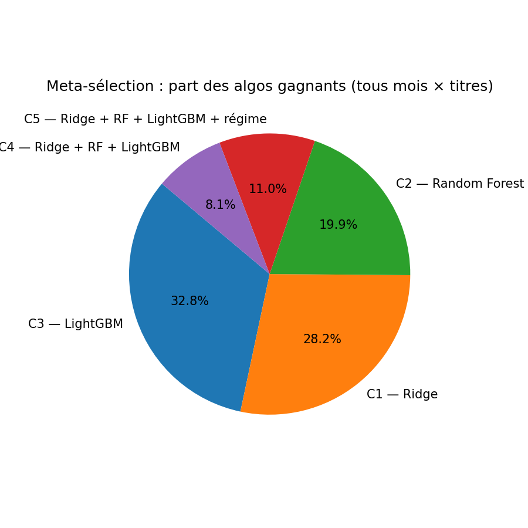

Généré le 2026-09-01




# Rapport complet — RAF-ADAPT **Date** : 2026-09-01 **Période OOS** : juillet 2018 → juin 2025 (84 mois) ## Sommaire 1. Architecture et protocole 2. Données et features 3. Bloc A — Régime 4. Walk-forward 5. Bloc B — C1–C5 et équations ML 6. Recommandations BUY / NEUTRAL / SELL 7. Bloc C — Liquidité 8. Bloc D — NSGA-III 9. Meta-sélection et mart plateforme 10. Synthèse des résultats --- ## 1. Architecture Pipeline : Données BVC → features z-scorées → Bloc A → Bloc B (5 algos) → reco τ causal → Bloc C → Bloc D NSGA → mart `best/` → dashboard Streamlit. ## 5. Bloc B — Équations **Cible (alpha ajusté risque)** : ``` α_i,t = (r_i,t - r_MASI,t) / σ_down_i,t ``` **Ridge (C1)** : `min_w ||y - Xw||² + λ||w||²` **Hybride triple (C4/C5)** : z-score cross-sectionnel puis ``` score = (z_Ridge + z_RF + z_LGBM) / 3 ``` **Rank-IC moyen (81 folds)** : | Stratégie | Rank-IC | IC95 bootstrap | | --- | --- | --- | | C1 — Ridge | 0.0257 | [-0.033, 0.084] | | C2 — Random Forest | 0.0429 | [-0.007, 0.103] | | C3 — LightGBM | 0.1305 | [0.098, 0.159] | | C4 — Ridge + RF + LightGBM | 0.0813 | [0.037, 0.129] | | C5 — Ridge + RF + LightGBM + régime | 0.0817 | [0.037, 0.131] |  ## 8. Bloc D — NSGA-III **Objectifs** (pareto — 3 objectifs NSGA) : ``` max α_port = Σ w_i · α_i min CVaR_95(w) max L_port = Σ w_i · L(VMQ_i) avec L = sigmoid(VMQ) s.c. Σ w_i = 1, 0 ≤ w_i ≤ 0,10, CVaR(w) ≤ 0,9 × CVaR(MASI) ``` Pas de filtre VMQ ≥ 500 k : la liquidité est arbitrée sur le front de Pareto. **Sélection portefeuille** : point knee sur le front de Pareto (distance utopie). | Stratégie | Sharpe | Rend. ann. | Max DD | Turnover | | --- | --- | --- | --- | --- | | C1 — Ridge | 1.334 | 15.8 % | -15.5 % | 0.941 | | C2 — Random Forest | 1.321 | 15.7 % | -15.9 % | 0.947 | | C3 — LightGBM | 1.484 | 17.4 % | -15.3 % | 0.989 | | C4 — Ridge + RF + LightGBM | 1.400 | 17.5 % | -15.6 % | 0.983 | | C5 — Ridge + RF + LightGBM + régime | 1.367 | 17.2 % | -16.2 % | 1.004 |    ## 9. Livrable dashboard - **Sélection** : meilleur alpha parmi C1–C5 par titre et par mois. - **Portefeuille** : NSGA du champion Sharpe (C3 LightGBM). - Mart : `outputs/platform_mart/best/` ## 10. Synthèse | Question | Réponse | |----------|---------| | Meilleur prédictif (Rank-IC) | C3 LightGBM | | Meilleur financier post-NSGA | C3 LightGBM (Sharpe 1,31) | | Dashboard | Meta-sélection + portefeuille champion |